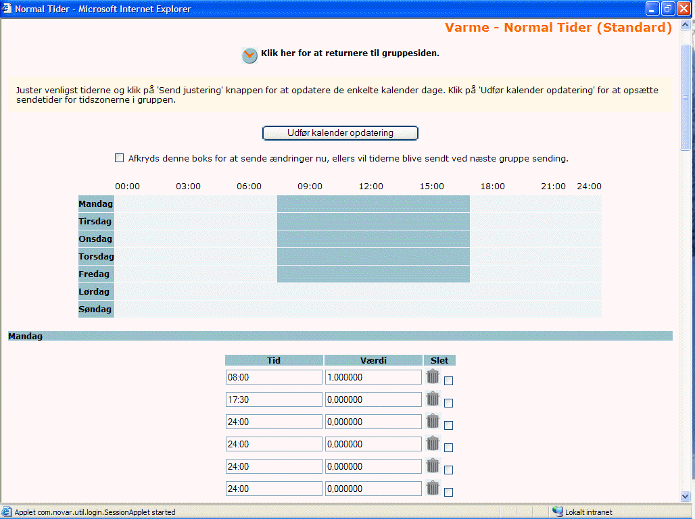

Sådan ser man en kalendergruppes normale driftstider:
2 Vis siden med den knap, der giver adgang til kalendergruppen, og klik på denne knap.
Eller
Klik på ‘Kalender’. Et yderligere vindue åbnes med enten kalendergruppen eller mapper, der indeholder kalendergrupper. Klik på den ønskede kalendergruppe eller, hvis kalendergruppen ikke kan ses, klik på mappen, der indeholder kalendergruppen. Gå tilbage til den forrige mappe (hovedmappen) ved at klikke på ‘Gå et mappe-niveau tilbage’.
Efter at have valgt en kalendergruppe fremkommer en side med de tilhørende tidszoner, med hvilken man kan få adgang til de normale driftstider og undtagelser.
3 Klik på ‘Klik her for at gå til denne gruppes normale tider’. Et display fremkommer, der ligner det vist nedenfor.

Vend tilbage til det forrige display ved at klikke på ‘Vend tilbage til den første gruppeside’.